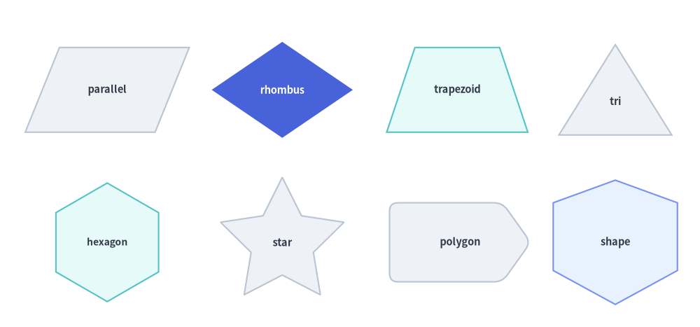
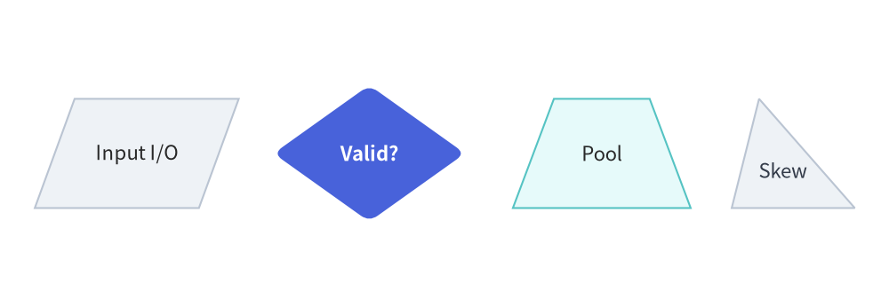
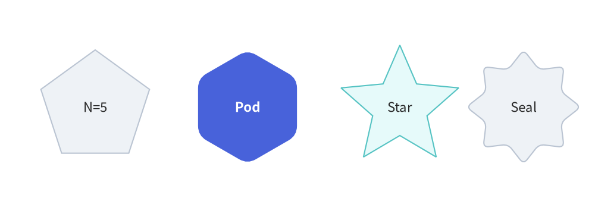
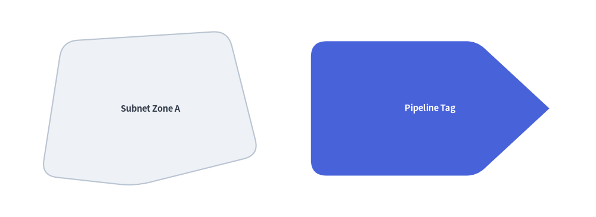
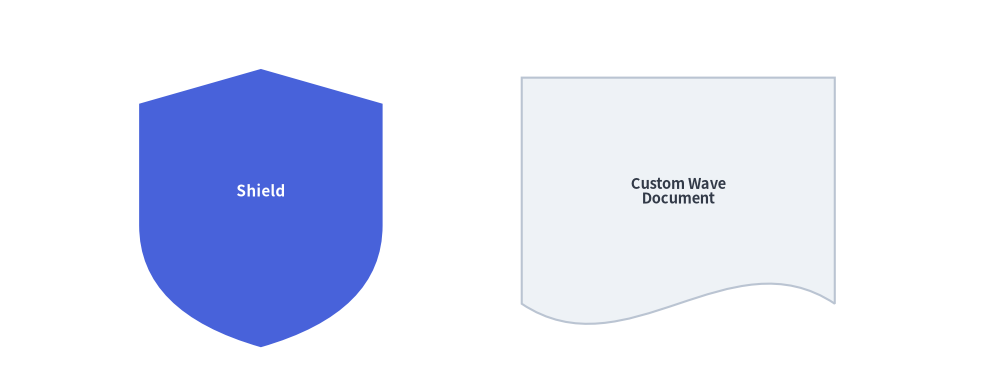

Polygons & Custom Paths
In addition to basic rectangles and circles, drawlib.shapes provides planar polygons (parallelogram, rhombus, trapezoid, triangle), radial equilateral shapes (regularpolygon, star), arbitrary coordinate polygons (polygon), and a low-level Bézier vector path builder (shape).
1. Overview of Polygons & Custom Paths

Source Code
from drawlib.canvas import save, setup
from drawlib.shapes import (
parallelogram,
polygon,
regularpolygon,
rhombus,
shape,
star,
trapezoid,
triangle,
)
from drawlib.styles import Styles
setup(width=124, height=58)
lbl_dark = Styles.DarkBold.patch(text_size=10.5)
lbl_white = Styles.WhiteBold.patch(text_size=10.5)
# Row 1: Planar Quadrilaterals & Triangle
parallelogram((19, 42), width=23, height=15, corner_angle=68, style=Styles.Neutral, text="parallel", text_style=lbl_dark)
rhombus(
(50, 42),
width=25,
height=17,
style=Styles.PrimaryFlat,
text="rhombus",
text_style=lbl_white,
)
trapezoid(
(81, 42),
height=15,
bottomedge_width=25,
topedge_width=15,
style=Styles.SecondaryNeutral,
text="trapezoid",
text_style=lbl_dark,
)
triangle((109, 42), width=20, height=16, style=Styles.Neutral, text="tri", text_style=lbl_dark.patch(xy_shift=(0, -2)))
# Row 2: Regular Polygons, Stars, Polygon & Custom Shape
regularpolygon((19, 15), num_vertex=6, radius=10.5, style=Styles.SecondaryNeutral, text="hexagon", text_style=Styles.DarkBold.patch(text_size=10.0))
star((50, 15), num_vertex=5, radius_ext=11.5, radius_int=5.8, style=Styles.Neutral, text="star", text_style=lbl_dark)
polygon(
[(69, 8), (89, 8), (94, 15), (89, 22), (69, 22)],
style=Styles.Neutral.patch(shape_r=1.5),
text="polygon",
text_style=lbl_dark,
)
shape(
(109, 15),
path_points=[(0, 6), (0, 18), (11, 22), (22, 18), (22, 6), (11, 0)],
style=Styles.PrimaryNeutral,
text="shape",
text_style=lbl_dark,
)
save()
2. Planar Quadrilaterals & Triangles
All planar quadrilateral and triangle primitives support corner rounding via style.patch(shape_r=...) (either a uniform float or a per-vertex tuple: 4-tuple for parallelogram, rhombus, and trapezoid; 3-tuple for triangle) and rotation via style.patch(angle=...):
| Function | Signature & Key Geometric Arguments | Typical Use Cases |
|---|---|---|
parallelogram |
parallelogram(xy, width, height, corner_angle=60.0, *, style, text="", text_style=None) |
Flowchart I/O blocks, data streams (corner_angle in $(0^\circ, 90^\circ)$; shape_r: float or 4-tuple). |
rhombus |
rhombus(xy, width, height, *, style, text="", text_style=None) |
Flowchart decision diamonds, conditional gateways (shape_r: float or 4-tuple). |
trapezoid |
trapezoid(xy, height, bottomedge_width, topedge_width, topedge_x=None, *, style, text="", text_style=None) |
Funnels, neural network pooling layers (topedge_x=None centers the top edge symmetrically; shape_r: float or 4-tuple). |
triangle |
triangle(xy, width, height, topvertex_x=None, *, style, text="", text_style=None) |
Warning badges, tree apexes, right-angled ramps (topvertex_x=None defaults to width / 2; shape_r: float or 3-tuple). |
from drawlib.canvas import save, setup
from drawlib.shapes import parallelogram, rhombus, trapezoid, triangle
from drawlib.styles import Styles
setup(width=124, height=40)
lbl_dark = Styles.DarkBold.patch(text_size=10.5)
# 1. Parallelogram (I/O Stream)
parallelogram(
(19, 20),
width=24,
height=16,
corner_angle=70,
style=Styles.Neutral,
text="Input I/O",
text_style=lbl_dark,
)
# 2. Rhombus (Decision Gate with rounded vertices)
rhombus(
(52, 20),
width=28,
height=20,
style=Styles.PrimaryFlat.patch(shape_r=1.5),
text="Valid?",
text_style=Styles.WhiteBold.patch(text_size=10.5),
)
# 3. Symmetric Trapezoid (Pooling / Funnel Layer)
trapezoid(
(84, 20),
height=16,
bottomedge_width=26,
topedge_width=14,
style=Styles.SecondaryNeutral,
text="Pool",
text_style=lbl_dark,
)
# 4. Asymmetric Triangle (topvertex_x shifts apex horizontally)
triangle(
(111, 20),
width=19,
height=16,
topvertex_x=4,
style=Styles.Neutral,
text="Skew",
text_style=Styles.DarkBold.patch(text_size=10.0, xy_shift=(-1.5, -2.5)),
)
save()

3. Regular Polygons & Stars (regularpolygon, star)
regularpolygon(xy, num_vertex, radius, *, style, text="", text_style=None): Draws an equilateral $N$-sided polygon circumscribed insideradius. Setstyle.patch(shape_r=...)(a scalarfloator anum_vertex-tuple of per-vertex radii) to round vertices, orstyle.patch(angle=...)to rotate.star(xy, num_vertex, radius_ext, radius_int, *, style, text="", text_style=None): Draws a symmetric $N$-pointed star alternating between outer peak radiusradius_extand inner valley radiusradius_int(radius_ext > radius_int). Also supports corner rounding viastyle.patch(shape_r=...)(either a uniformfloator a(2 * num_vertex)-tuple of alternating outer/inner vertex radii).
from drawlib.canvas import save, setup
from drawlib.shapes import regularpolygon, star
from drawlib.styles import Styles
setup(width=120, height=40)
lbl_dark = Styles.DarkBold.patch(text_size=10.5)
# 1. Pentagon (num_vertex=5)
regularpolygon(
(19, 20),
num_vertex=5,
radius=12,
style=Styles.Neutral,
text="N=5",
text_style=lbl_dark,
)
# 2. Rounded Hexagon Pod (num_vertex=6, shape_r=2)
regularpolygon(
(49, 20),
num_vertex=6,
radius=12,
style=Styles.PrimaryFlat.patch(shape_r=2),
text="Pod",
text_style=Styles.WhiteBold.patch(text_size=10.5),
)
# 3. 5-Point Star (radius_ext=13, radius_int=6.5)
star(
(79, 20),
num_vertex=5,
radius_ext=13,
radius_int=6.5,
style=Styles.SecondaryNeutral,
text="Star",
text_style=lbl_dark,
)
# 4. Rounded 8-Point Seal Badge (shape_r=1.2)
star(
(106, 20),
num_vertex=8,
radius_ext=12,
radius_int=8.5,
style=Styles.Neutral.patch(shape_r=1.2),
text="Seal",
text_style=lbl_dark,
)
save()

4. Arbitrary Vertex Polygons (polygon)
polygon(xys, *, style, text="", text_style=None) constructs a closed polygon directly from a list of canvas vertex coordinates xys=[(x1, y1), (x2, y2), ...].
- Corner Rounding (
style.shape_r): Pass a single float to round all vertices equally, or a tuple of radii(r1, r2, ..., rN)matchinglen(xys)to round individual vertices selectively. - Centroid Label: Embedded
textis automatically placed at the bounding-box center ofxys.
from drawlib.canvas import save, setup
from drawlib.shapes import polygon
from drawlib.styles import Styles
setup(width=115, height=42)
# 1. Irregular network zone with uniform corner rounding
polygon(
xys=[(8, 8), (12, 34), (44, 36), (50, 12), (26, 6)],
style=Styles.Neutral.patch(shape_r=3),
text="Subnet Zone A",
text_style=Styles.DarkBold.patch(text_size=10.5),
)
# 2. Custom tag card with per-vertex radii (sharp tip on right)
polygon(
xys=[(60, 8), (60, 34), (92, 34), (106, 21), (92, 8)],
style=Styles.PrimaryFlat.patch(shape_r=(3, 3, 2, 0, 2)),
text="Pipeline Tag",
text_style=Styles.WhiteBold.patch(text_size=10.5),
)
save()

5. Custom Vector & Bézier Path Builder (shape)
For custom icons, shields, waves, or irregular components that need relative positioning, rotation, and Bézier curves, use shape():
shape(
xy: tuple[float, float],
path_points: list[...],
*,
style: Style,
text: str = "",
text_style: Style | None = None,
is_default_center: bool = False,
)
path_points defines a closed vector path in local coordinates, which Drawlib automatically aligns and rotates around xy according to style:
- Line Vertex:
(x, y)adds a straight line segment. - Quadratic Bézier Segment:
((cp_x, cp_y), (end_x, end_y))curves toward control pointcpbefore ending atend. - Cubic Bézier Segment:
((cp1_x, cp1_y), (cp2_x, cp2_y), (end_x, end_y))uses two control points for smooth S-curves and waves. is_default_center: Controls fallback alignment whenstyle.halignorstyle.valignisNone. All presetStyles.*explicitly sethalign="center", valign="center", centering the path's bounding box atxy. When using a rawStyle()withhalign=None, valign=None,is_default_center=False(default) anchors the bounding box's bottom-left corner atxy, whereasis_default_center=Truecenters the bounding box atxy.
from drawlib.canvas import save, setup
from drawlib.shapes import shape
from drawlib.styles import Styles
setup(width=115, height=44)
# 1. Custom Shield Badge (Quadratic Bézier curved bottom)
shape(
xy=(30, 22),
path_points=[
(0, 14),
(0, 28),
(14, 32),
(28, 28),
(28, 14),
((28, 4), (14, 0)),
((0, 4), (0, 14)),
],
style=Styles.PrimaryFlat,
text="Shield",
text_style=Styles.WhiteBold.patch(text_size=11.0),
)
# 2. Document Card with Wavy Bottom Edge (Cubic Bézier)
shape(
xy=(78, 22),
path_points=[
(0, 4),
(0, 30),
(36, 30),
(36, 4),
((24, 12), (12, -4), (0, 4)),
],
style=Styles.Neutral,
text="Custom Wave\nDocument",
text_style=Styles.DarkBold.patch(text_size=10.5),
)
save()
